Un projet qui simule la réalité industrielle
Le projet bateau est le fil rouge de 2ème et 3ème année à l'ICAM Toulouse. Sa particularité pédagogique : chaque groupe conçoit un bateau en première année mais ne réalise pas le sien — les fichiers partent vers un autre groupe. On reçoit à notre tour le dossier d'un groupe inconnu et on doit construire à partir de là. Ce dispositif reproduit une réalité industrielle : être capable de démarrer un projet de zéro, mais aussi de reprendre un projet en cours de vie.
Théorie, conception & calculs
La première année est entièrement théorique. L'objectif est de produire un dossier complet de conception sans toucher au bateau physique : modélisation CAO, calculs mécaniques, synoptique électronique et analyse environnementale.
- Modélisation CAO — coque & composants (OnShape / SolidWorks)
- Calculs de flottabilité & centre de gravité
- Synoptique électronique complet
- Évaluation CO₂ des matériaux & procédés
- Anticipation des procédés de fabrication
Le travail du groupe précédent
En début de 2ème année, nous recevons sur une clé USB les fichiers produits par un autre groupe : modélisation CAO de la coque et ébauche d'un site web de télécommande. Ce dossier devient notre point de départ — comprendre ce qui a été conçu, identifier ce qui est exploitable, et adapter le reste à nos contraintes de fabrication.
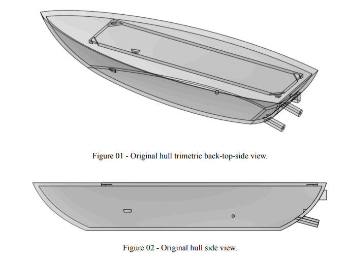
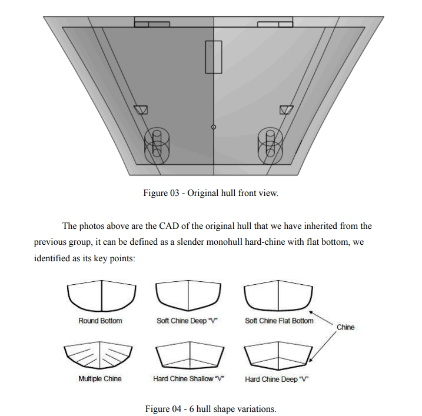
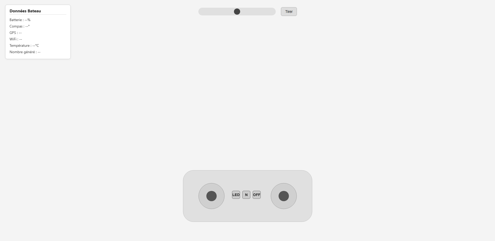
D'une clé USB à la victoire
C'est l'année la plus exigeante du projet. À partir du dossier reçu, sans bateau physique ni composants préparés, il faut tout construire : adapter la conception aux contraintes réelles, fabriquer la coque en bois, intégrer l'électronique et développer le système de contrôle embarqué — jusqu'à la mise à l'eau pour la démonstration finale.
- Analyse du dossier reçu — CAO & synoptique
- Modifications CAO OnShape — adaptation au bois
- Mise à jour du synoptique électronique
- Fabrication coque bois — méthode propre à l'équipe
- Intégration électronique complète
- Firmware embarqué & interface web
- 🏆 Mise à l'eau — 3 victoires / 3 courses
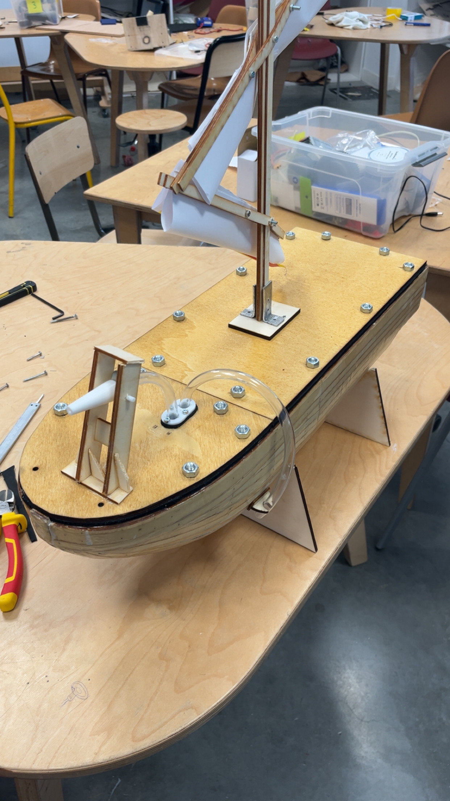


Conception & fabrication
La coque est modélisée intégralement sous OnShape, avec l'ensemble de ses compartiments, supports et éléments structuraux. Les calculs de flottabilité et de centre de gravité guident chaque choix de forme et de matériau. La fabrication physique en 2ème année comprend l'usinage, le collage, l'étanchéité et la préparation des passages de câbles.
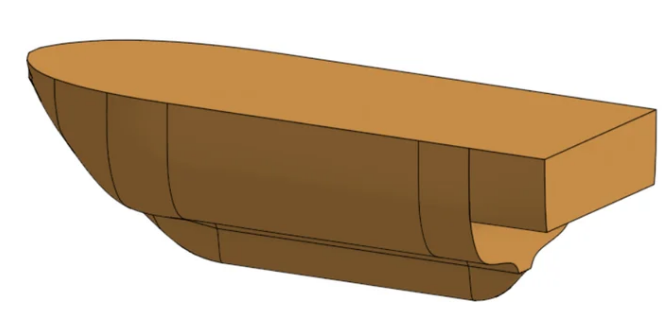
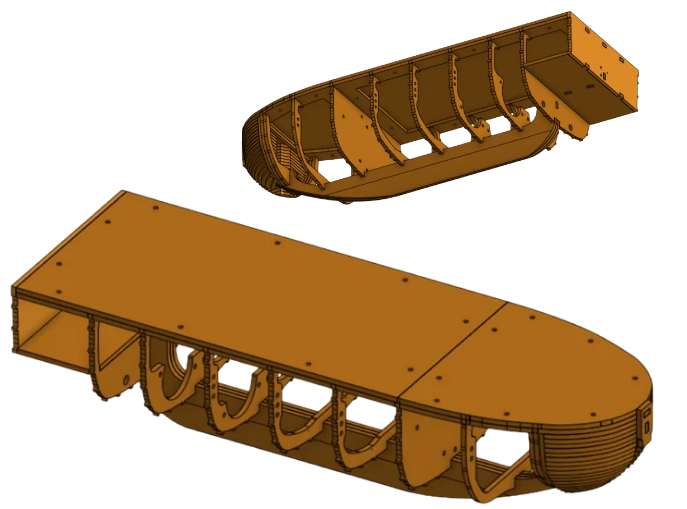
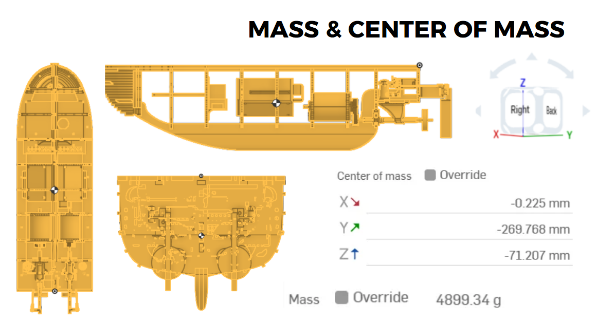
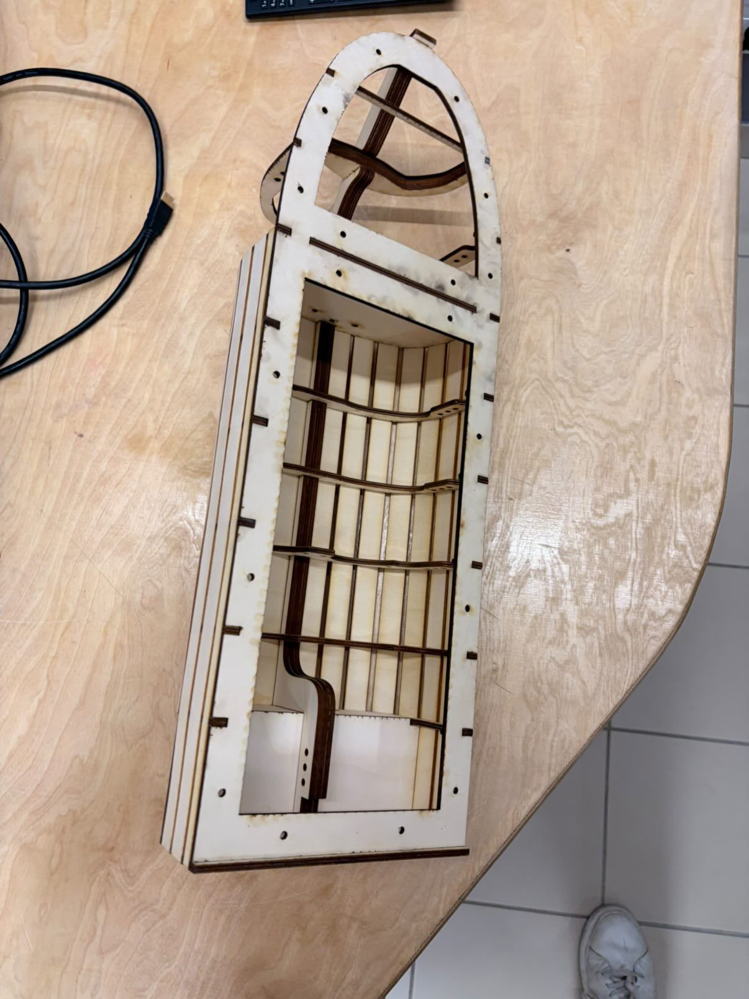
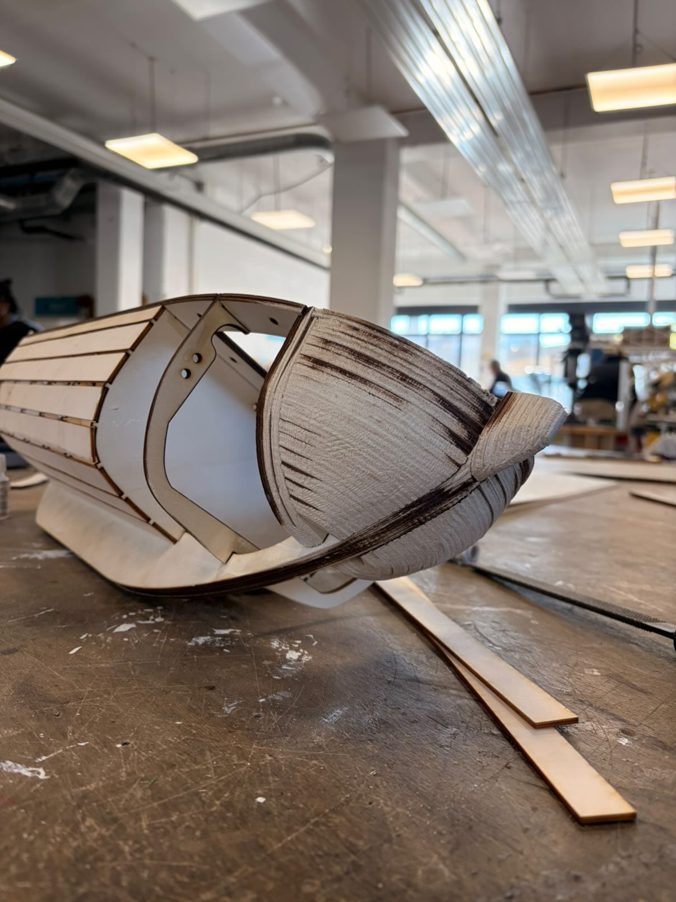
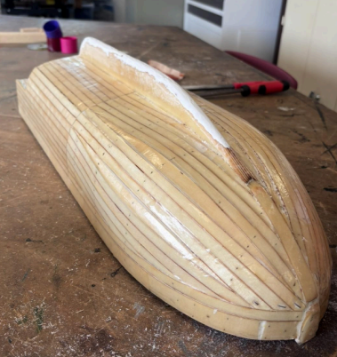
Intégration des composants électroniques
Une fois la coque fabriquée, l'étape critique est l'intégration électronique : positionner, câbler et fixer l'ensemble des composants dans un espace contraint, en garantissant l'étanchéité des passages et la robustesse des connexions pour une utilisation en milieu aquatique.
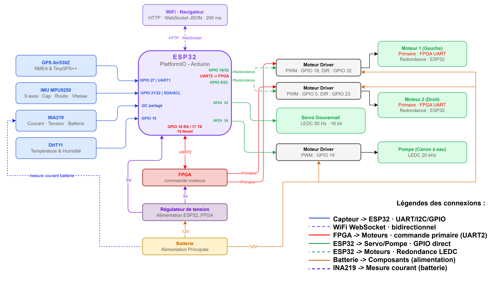
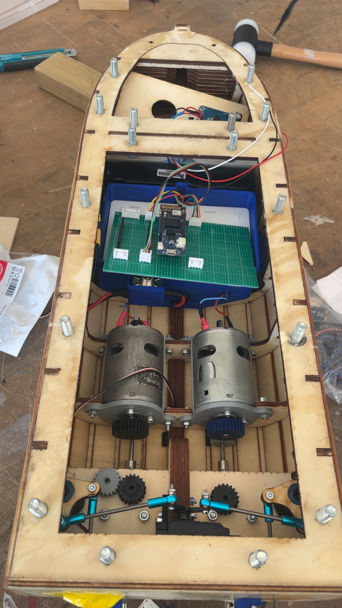
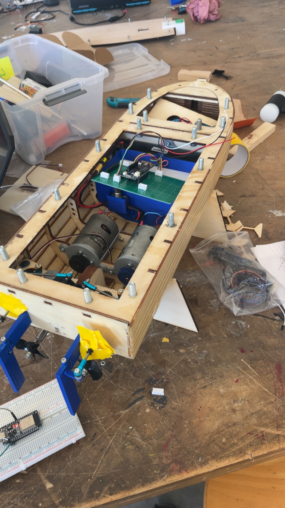
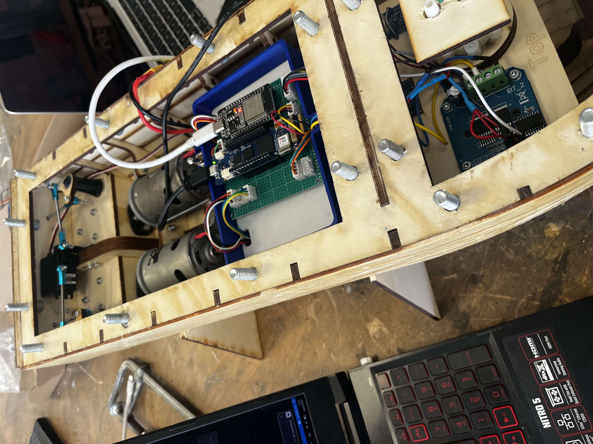
- ESP32 — cerveau central, WiFi AP
- FPGA — moteurs & RPM (UART GPIO 16/17)
- GPS Air530Z — UART1 RX GPIO 27
- IMU MPU9250 — I2C (SDA 21 / SCL 22)
- INA219 courant/tension — I2C partagé
- DHT11 température/humidité — GPIO 15
- Moteur 1 — PWM GPIO 18 / dir GPIO 32
- Moteur 2 — PWM GPIO 5 / dir GPIO 23
- Servo gouvernail — GPIO 25, 50 Hz
- Pompe canon — GPIO 19, 20 kHz
- Batterie LiPo 12V
- Régulateur 12V → 5V · ESP32 & FPGA
- Driver Moteur 1 — 12V · PWM + DIR
- Driver Moteur 2 — 12V · PWM + DIR
- Driver Pompe — 12V · PWM
- INA219 — monitoring batterie temps réel
Firmware ESP32 & télécommande navigateur
Le firmware est développé sur ESP32 avec PlatformIO (framework Arduino). L'interface de contrôle est un site web embarqué dans le flash de l'ESP32 via LittleFS, accessible depuis n'importe quel appareil connecté au réseau WiFi du bateau. Un autopilote prend le relais automatiquement en cas de perte de connexion et ramène le bateau à son point d'origine par GPS.
Joystick direction · Joystick vitesse · Canon ±90° · FIRE · SET HOME
WiFi · Batterie · Cap · GPS · Vitesse · Temp · Courant — 200 ms
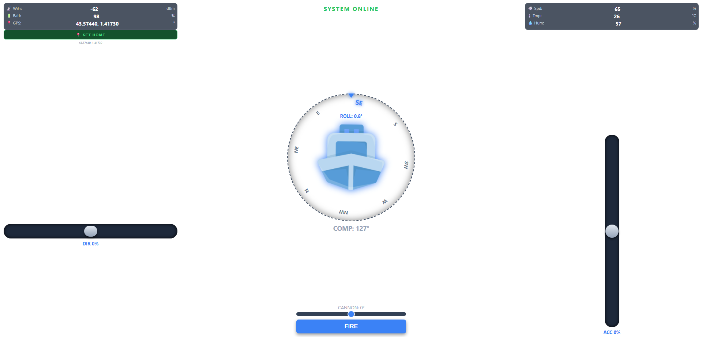
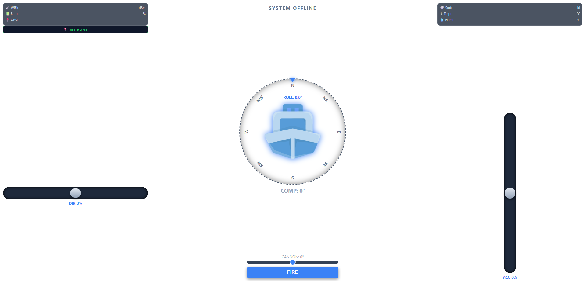
- Retour au HOME si WiFi perdu
- Navigation Haversine (GPS)
- Correcteur P — ±90°
- Ralentissement 20 m · arrêt 5 m
- WiFi AP embarqué
- HTTP + LittleFS
- WebSocket — JSON 200 ms
- UART FPGA — break + adresse
Un grand merci à Firas Mourad, coordinateur pédagogique de ce projet, pour son encadrement, ses conseils avisés et sa disponibilité tout au long de ces deux années.
Merci à l'ensemble du corps enseignant de l'ICAM Toulouse dont les cours ont directement nourri ce projet — de la mécanique des structures à l'électronique embarquée, en passant par la gestion de projets et le développement web.
La réalisation de la 2ème année n'aurait pas été ce qu'elle est sans Maxence Cerou, Isidore Clouet, Matéo Choplin et Joao Nascimento. Merci pour votre investissement, votre rigueur et pour l'ambiance qui a rendu cette année de réalisation aussi plaisante que productive.